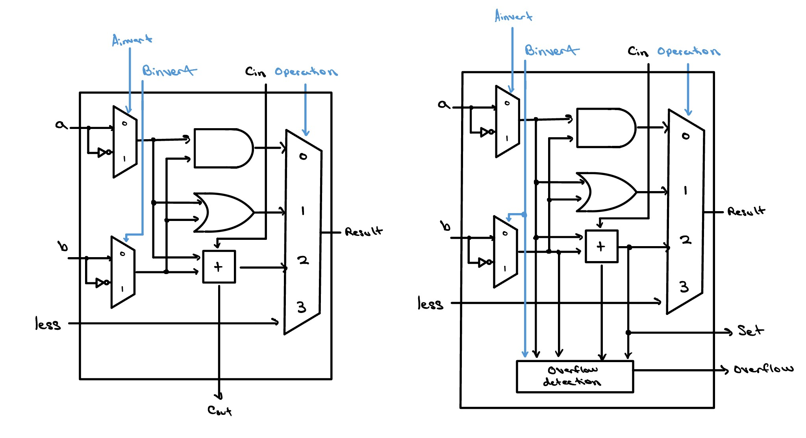
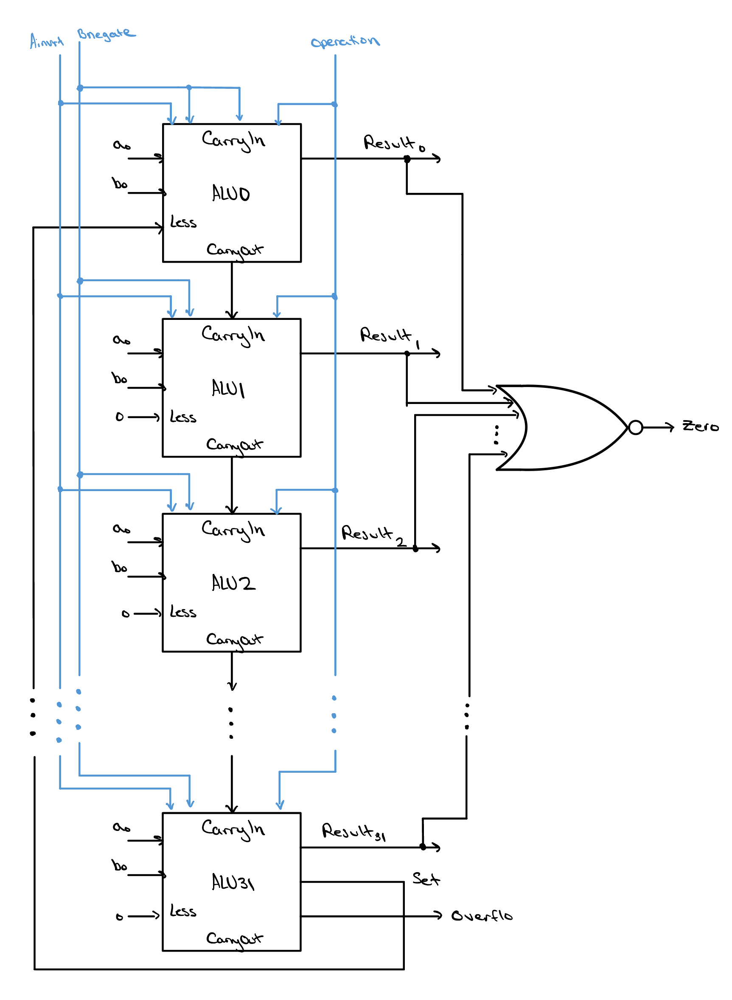

Project 01 · Beginner
Arithmetic Logic Unit
The ALU is the forge at the heart of the processor. Data enters as raw metal, instructions determine the shape of the hammer's strike, and the result emerges as something new—added, compared, shifted, or transformed.

On the Die
What you're looking at.
The ALU presented in this project is represented as a single unit. Modern processors such as AMD's Ryzen™ 5 9600X use a more advanced design. Instead of one ALU, each CPU core contains multiple execution units, including integer ALUs, address generation units (AGUs), branch units, and floating-point/vector units. These specialized units allow several operations to be executed in parallel, greatly increasing performance compared to a single-ALU design.
For simplicity, we start with a pared-down version of the integer execution that goes on in a processor. The processor does simple arithmetic, logic operations, and even a set-less-than operation. See how the ALU works below!

Start with one bit
A slice is just a few gates and muxes.
Before worrying about 32 bits, look at a single one — that's where the
whole design stops being intimidating. Operand a and
operand b each pass through a 2:1 multiplexer that can
optionally invert them (Ainvert / Binvert).
Those operands then feed an AND gate, an OR gate, and a full adder
in parallel. A 4:1 multiplexer picks which of those — AND, OR,
the sum, or the less signal — becomes this bit's output,
and the adder hands a carry-out to the next bit along.
There are only two kinds of slice. Almost every bit uses the generic
alu_slice on the left. The single most-significant bit
uses alu_msb on the right, which adds an
overflow-detection block and a set output used for signed
comparison. The entire ALU is nothing more than a stack of the first
kind, capped by one of the second.

alu_slice used for bits
0 … N−2. Right: the alu_msb
for bit N−1, which adds the overflow-detection block and the
set output used for signed comparison.
Architecture
Stacking the slices into a chain.
Now stack those slices and let the carries flow. The least-significant
slice, ALU0, sits at the top; its
carry-out drops straight down into the carry-in of the slice just below
it, and so on down the column. The carry "ripples" from the top of the
chain to the bottom, one bit at a time, until it reaches the
most-significant slice — ALU31, the alu_msb —
at the very bottom. It's long addition, just written vertically.
The initial carry-in, fed in at the top of the chain, is driven by
Bnegate. Setting it to 1 (and inverting operand B) turns
the same chain of adders into a subtractor —
a + ~b + 1 = a - b — with no separate subtraction
hardware at all.
Two wires tie the chain together. Every slice's result bit feeds a NOR
gate that asserts zero when the whole result is 0; and the
MSB's set at the bottom is routed all the way back up to
the less input of ALU0 at the top — which is
what makes signed "set less than" land a 1 in bit 0 and 0 everywhere
else.

ALU0 down to ALU31. All result bits feed a NOR
gate that produces zero, and the bottom slice
(ALU31) produces set and overflow.
Its set runs back up to the less input of
ALU0.
Supported operations
Seven operations, one datapath.
A 4-bit control vector drives the whole ALU. These seven
operations are the ones the control unit actually issues; the same
gates quietly produce a handful of other combinations too (see the
full decode further down).
| Operation | control[3:0] | Function |
|---|---|---|
| AND | 0000 | a & b |
| OR | 0001 | a | b |
| ADD | 0010 | a + b |
| SUB | 0110 | a - b |
| SLT | 0111 | signed a < b (1 or 0) |
| NOR | 1100 | ~(a | b) |
| NAND | 1101 | ~(a & b) |
Key ideas
The four tricks that make it work.
-
01 / Reuse
Built from 1-bit slices
alu_fullinstantiates N−1 identicalalu_slicemodules and onealu_msbvia agenerateloop, so the design scales to any width through theNparameter without touching the source. -
02 / Subtract
Subtraction by inversion
Bnegateinverts operand B and forces the chain's carry-in to 1, forminga + ~b + 1 = a - b— no dedicated subtractor required. -
03 / Logic
NOR & NAND via De Morgan
They reuse the AND/OR datapath with both operands inverted:
~(a | b) = ~a & ~band~(a & b) = ~a | ~b. The forced carry-in is harmless because the adder output isn't selected. -
04 / Compare
Signed compare & overflow
The MSB derives
ovf = cin ^ msbCoutandsetLess = sum[MSB] ^ ovf, correcting the sign ofa - bon overflow and feeding it back to bit 0 — so even min-negative vs. max-positive compares correctly.
How it's organized
Module hierarchy.
alu_full
├── alu_slice (×(N-1))
│ ├── mux_2x1 (A invert)
│ ├── mux_2x1 (B invert)
│ ├── full_adder
│ └── mux_4x1 (operation select)
└── alu_msb
├── mux_2x1 (A invert)
├── mux_2x1 (B invert)
├── full_adder
└── mux_4x1 (operation select)| Module | File | Description |
|---|---|---|
alu_full | rtl/alu_full.v | Top level. Instantiates N−1 slices + one MSB block; produces result, ovf, zero. |
alu_slice | rtl/alu_slice.v | 1-bit ALU slice for bits 0 … N−2. |
alu_msb | rtl/alu_msb.v | MSB slice; adds overflow detection and setLess generation. |
full_adder | rtl/full_adder.v | 1-bit combinational full adder. |
mux_2x1 | rtl/mux_2x1.v | N-bit 2:1 multiplexer (operand inversion). |
mux_4x1 | rtl/mux_4x1.v | N-bit 4:1 multiplexer (operation select). |
Interface
Ports & control.
The top-level alu_full has a small, clean interface.
Parameter N defaults to 32.
| Port | Dir | Width | Description |
|---|---|---|---|
a | in | N | Operand A |
b | in | N | Operand B |
control | in | 4 | Operation control vector (below) |
result | out | N | Operation result |
ovf | out | 1 | Overflow (signed add/sub) |
zero | out | 1 | Asserted when result == 0 |
The control vector
| Bits | Name | Function |
|---|---|---|
control[3] | Ainvert | Invert operand A |
control[2] | Bnegate | Invert operand B and set carry-in (two's-complement subtract) |
control[1:0] | operation | Result mux select: 00=AND, 01=OR, 10=ADD, 11=less |
Show the full 16-value control decode
All 16 control values, for completeness. The ✓ rows are
the operations the control unit actually drives; the rest are
byproducts the datapath can still produce.
aMuxOut = Ainvert ? ~a : a,
bMuxOut = Bnegate ? ~b : b, and the adder carry-in equals
Bnegate.
| control | Ainv | Bneg | op | Result | Operation | |
|---|---|---|---|---|---|---|
0000 | 0 | 0 | 00 | a & b | AND | ✓ |
0001 | 0 | 0 | 01 | a | b | OR | ✓ |
0010 | 0 | 0 | 10 | a + b | ADD | ✓ |
0011 | 0 | 0 | 11 | less of a + b | — no meaningful compare | |
0100 | 0 | 1 | 00 | a & ~b | logic byproduct | |
0101 | 0 | 1 | 01 | a | ~b | logic byproduct | |
0110 | 0 | 1 | 10 | a + ~b + 1 = a - b | SUB | ✓ |
0111 | 0 | 1 | 11 | signed a < b | SLT | ✓ |
1000 | 1 | 0 | 00 | ~a & b | logic byproduct | |
1001 | 1 | 0 | 01 | ~a | b | logic byproduct | |
1010 | 1 | 0 | 10 | ~a + b = b - a - 1 | arith byproduct | |
1011 | 1 | 0 | 11 | less of ~a + b | — no meaningful compare | |
1100 | 1 | 1 | 00 | ~a & ~b = ~(a | b) | NOR | ✓ |
1101 | 1 | 1 | 01 | ~a | ~b = ~(a & b) | NAND | ✓ |
1110 | 1 | 1 | 10 | ~a + ~b + 1 = -(a + b) - 1 | arith byproduct | |
1111 | 1 | 1 | 11 | less of ~a + ~b + 1 | — no meaningful compare |
Proof it's correct
Verified against an independent model.
The ALU is combinational, so the testbench is a stand-alone unit test
rather than a clocked lockstep model. For every stimulus a behavioral
golden model re-derives the expected outputs without
copying the gate-level structure: result from native
Verilog operators, ovf from the independent sign-bit
overflow identity, and zero as result == 0.
Every vector is compared with 4-state equality (!==), so
stray X/Z on the outputs is caught too. A curated set of 13 directed
vectors targets the edge cases — all four logic ops, ADD with and
without overflow in both directions, SUB of equal operands and SUB
overflow, and signed SLT including the min-negative / max-positive
overflow-correction cases.
==================================================
Total vectors applied: 13
RESULT: PASS - 0 errors. DUT == behavioral oracle.
==================================================
Try it yourself
Run the simulation.
Everything runs on free, open-source tools — no licenses, no cost. Grab the repo and go.
Option 1 — Makefile (recommended)
# from the alu/ root
make # compile only
make run # compile and run
Requires make. On Windows:
winget install GnuWin32.Make
Option 2 — manual compile
# Windows (PowerShell) — single line
iverilog -g2012 -o sim testbench/tb_alu_full.v rtl/alu_full.v rtl/alu_msb.v rtl/alu_slice.v rtl/full_adder.v rtl/mux_2x1.v rtl/mux_4x1.v
# Run
vvp sim
# View waveforms
gtkwave waveforms/dump.vcdTools
| Tool | Purpose |
|---|---|
| Icarus Verilog 12.0 | RTL simulation |
| GTKWave / EPWave | Waveform inspection |
| GNU Make | Build automation |
Where this leads
This is step one toward a CPU.
Once the ALU clicks, it becomes a building block: it's the arithmetic heart of the single-cycle RISC-V processor that comes next. Read the full source, run it, break it, and rebuild it — that's how this stuff actually sticks.